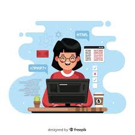
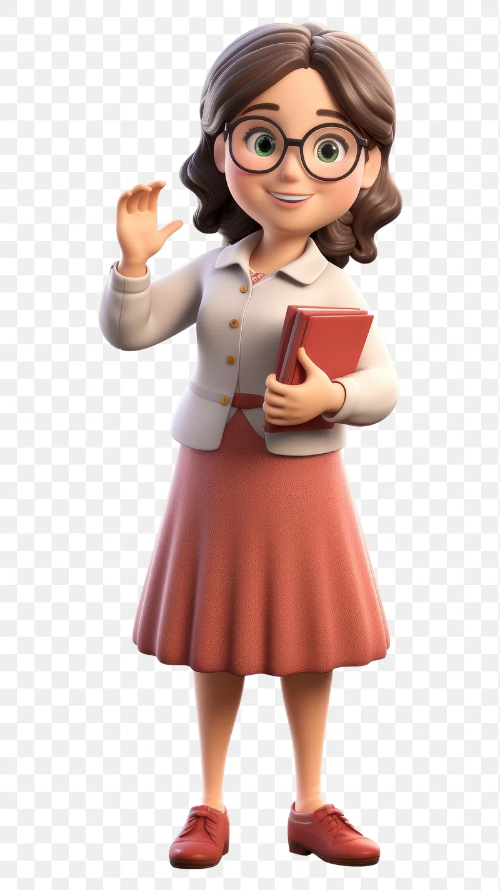

Hi,My name is Sadaf
and I am Passionate
Work Experience

HTML Developer (Beginner)
Enthusiastic and eager-to-learn HTML Developer with foundational knowledge in HTML5 and CSS3. Capable of creating simple, responsive web pages and understanding basic web design principles. Committed to expanding skills and gaining hands-on experience to contribute effectively to web development projects.
CSS Developer (Beginner)
Familiar with fundamental CSS concepts and frameworks, eager to develop skills in building engaging web experiences.
Gained hands-on experience in creating responsive web designs using CSS, focusing on usability and aesthetics.
Assistant Office (2023-2024)
Assisted in project management and coordination, ensuring timely completion of tasks while supporting team collaboration.
Developed and maintained efficient office workflows, enhancing productivity through effective communication and organization.

LOGO Designer (Intermediate),
Video Editor (Intermediate)
Crafted unique and memorable logos that effectively convey brand identity and resonate with target audiences.

Teacher in 'The Educators School'(2010-2023)
Skilled in developing customized lesson plans that cater to diverse learning styles and enhance overall academic achievement.